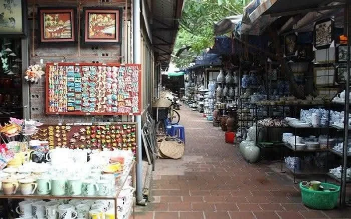
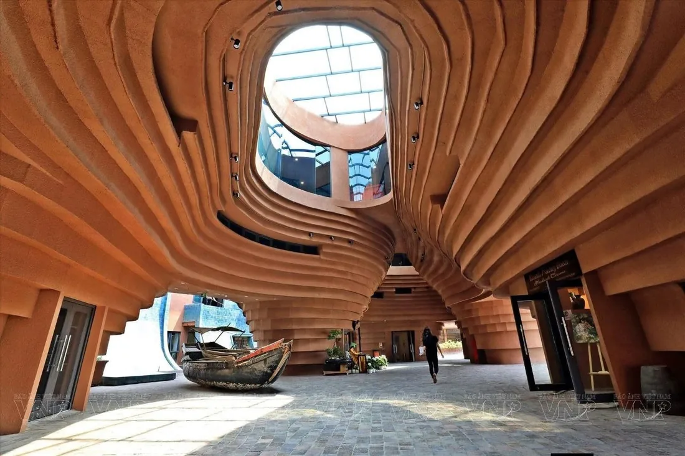
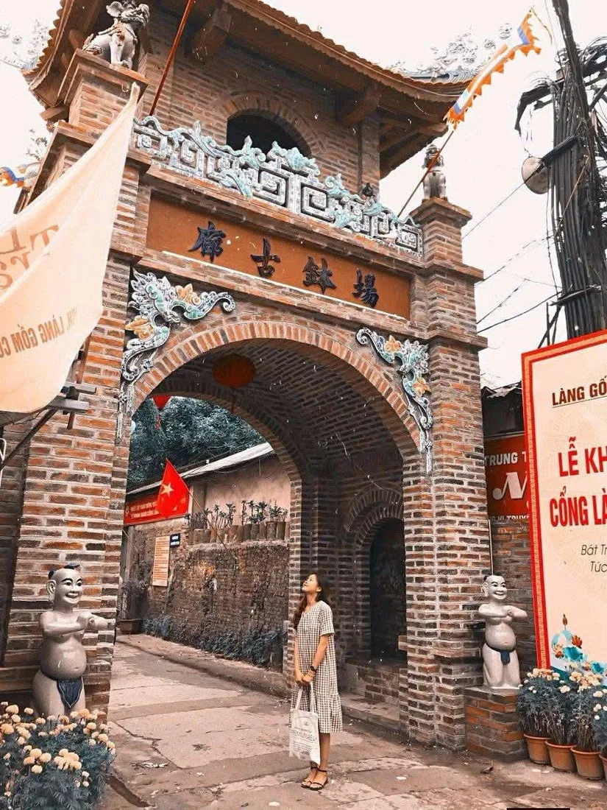

밧짱: 700년 역사의 베트남 도자기 마을
밧짱(Bát Tràng)은 베트남에서 가장 유명한 공예 마을 중 하나입니다. 하노이에서 멀지 않은 홍강 강변에 자리하며, 700년이 넘도록 도자기를 만들어 대대로 그 비법을 전해 왔습니다. 베트남 도자기가 어떻게 태어나는지, 무엇을 기념품으로 가져올 수 있는지, 그리고 꽃다발과 어떻게 이어지는지 소개합니다.
밧짱의 위치
밧짱은 홍강 왼쪽 강변, 하노이 중심에서 약 12km 떨어진 자럼(Gia Lâm) 지역에 있습니다. 오기 쉬워서 베트남 사람과 관광객 모두에게 오래전부터 인기 있는 곳입니다. 강과 가까운 위치가 마을의 운명을 정했습니다 — 강변에 도자기의 핵심 재료인 고운 백토가 있었기 때문입니다.
700년의 역사
마을의 역사는 11세기, 리 왕조의 왕이 수도를 탕롱(오늘날의 하노이)으로 옮긴 때로 거슬러 올라갑니다. 흙이 부족해진 닌빈성 보밧(Bồ Bát) 마을의 도공들이 흙이 풍부한 홍강 강변으로 이주하면서 밧짱이 생겨났습니다.
그로부터 700년이 넘게 흐르는 동안, 도자기 제작 전통은 아버지에서 아들로, 공방에서 공방으로 대대로 이어져 왔습니다.
마을이 유명해진 이유
14~15세기 쩐 왕조와 레 왕조 시대에 이르러 밧짱의 명성은 베트남 국경을 넘어 널리 퍼졌습니다. 궁전과 사원을 위해 그 제품을 사들였고, 중국·일본은 물론 유럽 상인들까지 이곳 도자기에 감탄했습니다. 밧짱 도자기는 베트남의 중요한 수출품이 되었습니다.

이곳에서 만드는 것
오늘날 밧짱에는 약 850가구가 살며, 거의 모두가 어떤 식으로든 도자기와 연결되어 있습니다. 찻잔 세트, 장식용 화병, 그릇, 조각상, 가정용·사원용 제품을 만듭니다. 마을을 걷다 보면 수십 개의 공방과 수공예품 가게를 볼 수 있습니다.
특유의 스타일: 그림과 유약
밧짱 도자기는 쉽게 알아볼 수 있습니다. 높은 품질, 우아한 손그림, 특유의 유약으로 유명하죠. 장인들은 수백 년에 걸쳐 흙의 배합, 유약 비법, 그림 기법을 다듬어 왔기에 각 작품이 견고하면서도 아름답습니다.

마을 산책과 도자기 시장
밧짱을 걷는 것 자체가 즐거움입니다 — 좁은 골목, 화병과 찻잔으로 가득한 진열창, 흙 냄새. 2004년 마을에는 도자기 시장(Chợ gốm)이 문을 열어, 주민들이 생활 도자기부터 예술품, 건축 도자기까지 전시하고 거래합니다.
직접 화병 만들기
관광객에게 가장 인기 있는 것 중 하나는 직접 물레 앞에 앉아 보는 것입니다. 현지 장인의 지도로 컵이나 화병을 빚고, 구운 뒤 자신의 작품을 기념으로 가져갈 수 있습니다. 아이와 어른 모두가 좋아하는 소박하고 따뜻한 경험입니다.

옛 가마와 전통 가옥
마을에는 옛 가마와 전통 가옥이 남아 있어, 베트남에서 가장 오래된 공예 중심지 중 하나의 역사를 느낄 수 있습니다. 유리 너머의 박물관이 아니라, 매일 공예가 이어지는 살아 있는 곳입니다.
밧짱에서 가져올 기념품
밧짱은 기념품을 사기 좋은 곳입니다 — 찻잔, 사발, 그림이 그려진 화병과 접시, 작은 조각상. 모두 수제이고 저렴합니다. 가게에서 산 물건보다 훨씬 의미 있는, 700년 역사를 담은 선물입니다.
밧짱 도자기와 꽃
그리고 도자기와 꽃은 아주 잘 어울립니다 — 밧짱의 화병은 신선한 꽃다발을 위한 완벽한 집이니까요. 수제 화병에 생화를 더하면 평범한 선물이 작은 예술 작품이 됩니다. 나트랑에서 휴가를 보낸다면, 화병은 여행에서 가져오고 꽃다발은 저희에게 주문하세요.
저희가 나트랑과 깜라인 전역의 호텔·빌라·사무실로 신선한 꽃다발이나 헬륨 풍선을 당일에 배달해 드립니다 — 예쁜 화병에 꽃을 꽂기만 하면 됩니다. WhatsApp, Telegram 또는 KakaoTalk으로 연락 주세요. 커뮤니티 'Go To VietNam' 자료 참고.